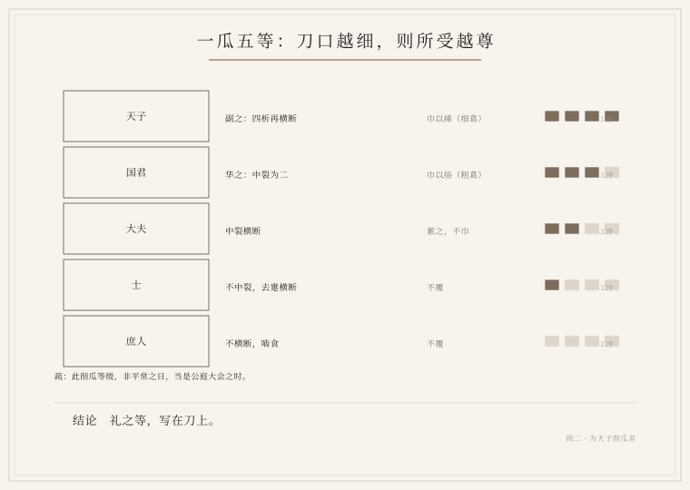

曲礼上 · 一·八十四 · 第 82 课
同一只瓜，为天子削、为国君削、为大夫削、为士削、庶人自食，切法、覆巾、进法各不相同，共五等。此节是曲礼中最整齐的一段等级标本。
说什么事：为天子削瓜者副之，巾以絺；为国君者华之，巾以绤；为大夫累之；士疐之；庶人龁之。
落在哪一层：仪，兼及分。一瓜五等，见礼之等杀。
为何编在此位：上节论食器之用，此节论食物之治。皆饮食之细。
【经】為天子削瓜者副之，巾以絺。為國君者華之，巾以綌。為大夫累之，士疐之，庶人齕之。
【注】副，析也。既削，又四析之，乃橫斷之，而巾覆焉。華，中裂之，不四析也。累，倮也，謂不巾覆也。士疐之，不中裂，橫斷去疐而已。庶人齕之，不橫斷。
削 疏「削，刊也」。先削去瓜皮。
副 注「副，析也」；疏「析为四解，又横切之」。四析再横断。
巾以絺 絺，细葛。削毕以细葛巾覆而进。
华 注「中裂之，不四析也」；疏「华谓半破也」。只中分，不再四析。
巾以绤 绤，粗葛。诸侯礼降，巾用粗葛。
累 注「累，倮也，谓不巾覆也」。中裂横断而已，不覆巾。
疐 注「疐谓脱华处」；疏「士不半破，但除疐而横断」。疐是瓜蒂连接处。
龁 注「不横断」；疏「龁，啮也」。庶人就去疐而啮食，不切。
公庭大会 疏「此削瓜等级不同，非谓平常之日，当是公庭大会之时也」。
为天子削瓜，削皮后剖为四瓣、再横断，用细葛巾覆着进上；为国君削，只中剖为二、横断，用粗葛巾覆着进上；为大夫削，中剖横断而不覆巾；为士削，不中剖，只去蒂横断；庶人则去蒂直接啃。
一节五等，等差不在瓜，在「为谁削」。刀口越细、覆巾越精，则所受者越尊；至庶人自己吃，一切治瓜之工皆省。礼之等，写在刀上。
第一层 副之与华之 四析与中裂之别。天子得四析，诸侯只得中裂。同一动作，多一刀即多一等。
第二层 絺与绤 细葛与粗葛。巾之粗细随爵而降，敬之厚薄见于布缕。
第三层 累与疐 大夫不覆巾，士不中裂。每降一等，减一道工序；工序之减，即礼数之减。
第四层 龁之最下 庶人不横断而啮。不是轻贱庶人，是庶人自食，无需治瓜之仪。礼之等，到此为止。
与今日何干 同一盘水果，待客切块摆盘、自家啃着吃。切法里藏着对谁的心意，古今一理。
| 左 | 右 |
|---|---|
| 副之 | 削皮后四析，再横断 |
| 巾以絺 | 细葛覆而进，天子之礼 |
| 华之 | 中裂为二，不四析 |
| 巾以绤 | 粗葛覆而进，诸侯之礼 |
| 累之 | 倮而不巾，大夫 |
| 疐之 | 不中裂，去蒂横断，士 |
| 龁之 | 不横断，啮食，庶人 |
画一案五列，自左至右五只瓜：第一只剖为四瓣再横断、上覆细葛巾；第二只中剖为二、覆粗葛巾；第三只中剖横断而不覆巾；第四只整只仅去蒂、切口平齐；第五只带蒂整只、旁有一道齿痕。巾纹粗细须可辨。不画人、不写文字。赭色只在瓜瓤一处。
